<title>Painel v2: as três versões</title>
<meta name="claude:viewport-fit-sides" content="cover">
<link rel="stylesheet" href="https://fonts.googleapis.com/css2?family=Inter:wght@400;600;700&family=Source+Serif+4:wght@600&display=swap">
<style>
/* Comparação lado a lado. Cores: as do painel (docs/painel.md), claro e escuro. */
:root {
  --fundo:#faf9f5; --cartao:#ffffff; --borda:#e6e3da; --texto:#1f1e1d; --texto-2:#6b6963;
  --destaque:#b8237f; --sobre-destaque:#ffffff; --aviso:#7a4f00; --aviso-fundo:#fbefd9;
  --serif:"Source Serif 4", Georgia, serif; --sans:"Inter", system-ui, sans-serif;
}
@media (prefers-color-scheme: dark) { :root:not([data-theme="light"]) {
  --fundo:#1f1e1d; --cartao:#2a2927; --borda:#3a3936; --texto:#f2f0ea; --texto-2:#a8a59c;
  --destaque:#f07cc4; --sobre-destaque:#1f1e1d; --aviso:#f2c46b; --aviso-fundo:#3f3322; color-scheme:dark; } }
:root[data-theme="dark"] {
  --fundo:#1f1e1d; --cartao:#2a2927; --borda:#3a3936; --texto:#f2f0ea; --texto-2:#a8a59c;
  --destaque:#f07cc4; --sobre-destaque:#1f1e1d; --aviso:#f2c46b; --aviso-fundo:#3f3322; color-scheme:dark; }
* { box-sizing:border-box; }
body { background:var(--fundo); color:var(--texto); font-family:var(--sans); font-size:15px; line-height:1.5; margin:0; }
main { max-width:1400px; margin:0 auto; padding-block:28px 64px; padding-left:max(16px, env(safe-area-inset-left, 0px)); padding-right:max(16px, env(safe-area-inset-right, 0px)); display:grid; gap:36px; }
h1, h2 { font-family:var(--serif); font-weight:600; text-wrap:balance; margin:0; }
h1 { font-size:2rem; } h2 { font-size:1.35rem; }
.sub, .eyebrow { color:var(--texto-2); margin:4px 0 0; }
.eyebrow { font-size:.8rem; letter-spacing:.06em; text-transform:uppercase; margin:0 0 4px; }
.responder { background:var(--cartao); border:1px solid var(--borda); border-radius:12px; padding:18px; display:grid; gap:12px; }
.responder h2 { font-size:1.1rem; }
.linha-resposta { display:flex; flex-wrap:wrap; gap:10px; align-items:center; }
code.resposta { font-family:ui-monospace, Menlo, monospace; font-size:.92rem; background:var(--fundo); border:1px solid var(--borda); border-radius:8px; padding:10px 12px; overflow-wrap:anywhere; flex:1 1 320px; min-width:0; user-select:all; }
button { font:inherit; font-weight:600; min-height:44px; padding:0 16px; border-radius:8px; border:0; background:var(--destaque); color:var(--sobre-destaque); cursor:pointer; }
ol.perguntas { margin:0; padding-left:22px; display:grid; gap:6px; }
ol.perguntas em { color:var(--texto-2); font-style:normal; }
.rec { background:var(--aviso-fundo); color:var(--aviso); border-radius:10px; padding:10px 12px; margin:0; }
ul.versoes { list-style:none; margin:0; padding:0; display:grid; gap:10px; grid-template-columns:repeat(auto-fit, minmax(220px, 1fr)); }
ul.versoes li { display:grid; grid-template-columns:auto 1fr; gap:2px 10px; background:var(--cartao); border:1px solid var(--borda); border-radius:12px; padding:12px; }
ul.versoes li span:last-child { grid-column:2; color:var(--texto-2); font-size:.9rem; }
.letra { display:inline-grid; place-items:center; width:26px; height:26px; border-radius:50%; background:var(--destaque); color:var(--sobre-destaque); font-weight:700; font-size:.85rem; }
.secao { display:grid; gap:12px; }
.grade { display:grid; gap:14px; grid-template-columns:repeat(3, minmax(0, 1fr)); align-items:start; }
#leva-cel .grade, #inicio-cel .grade { grid-template-columns:repeat(3, minmax(0, 300px)); }
@media (max-width: 760px) { .grade, #leva-cel .grade, #inicio-cel .grade { grid-template-columns:minmax(0, 1fr); } }
.foto { margin:0; background:var(--cartao); border:1px solid var(--borda); border-radius:12px; overflow:hidden; min-width:0; }
.foto figcaption { display:flex; gap:8px; align-items:center; padding:8px 10px; font-weight:600; border-bottom:1px solid var(--borda); }
.foto img { display:block; width:100%; height:auto; max-width:100%; }
.hoje { display:grid; gap:14px; grid-template-columns:minmax(0, 2fr) minmax(0, 1fr); align-items:start; }
@media (max-width: 760px) { .hoje { grid-template-columns:minmax(0, 1fr); } }
a { color:var(--destaque); }
:focus-visible { outline:2px solid var(--destaque); outline-offset:2px; }
footer { color:var(--texto-2); font-size:.9rem; }
</style>
<main>
<header>
  <p class="eyebrow">Painel da Sakura Corp · desenho pra escolher · 17/10/2026</p>
  <h1>Painel v2: as três versões</h1>
  <p class="sub">Os mesmos dados de exemplo e a mesma organização das abas; muda só o desenho. Toque numa foto pra abrir grande.</p>
</header>

<section class="responder" aria-labelledby="resp">
  <h2 id="resp">Como responder</h2>
  <p class="rec">Minha recomendação já está na linha abaixo: <strong>versão A, com o celular da B</strong>. Se concordar, é só copiar e mandar. Se não, troque o que quiser.</p>
  <div class="linha-resposta">
    <code class="resposta" id="resposta">versão: A · celular: B · início: sim · lojas: sim · nome: sim · quadro: depois · quando: leva 2</code>
    <button type="button" id="copiar">Copiar</button>
  </div>
  <p class="sub" id="copiado" role="status" aria-live="polite"></p>
  <ol class="perguntas">
    <li><strong>versão:</strong> A, B ou C? Pode misturar por parte: <code>barra: A</code>, <code>leva: C</code>, <code>início: B</code>. <em>Recomendo A.</em></li>
    <li><strong>celular:</strong> barra fixa embaixo (B ou C) ou botão "Menu" com gaveta (A)? <em>Recomendo B: deixa os lugares à vista.</em></li>
    <li><strong>início:</strong> a página principal vira o Início, e a leva vai pra <code>/leva</code>? <em>Recomendo sim.</em></li>
    <li><strong>lojas:</strong> uma aba "Lojas" (em breve) no grupo Empresa, que também depende do banco privado? <em>Recomendo sim.</em></li>
    <li><strong>nome:</strong> "Sakura Corp" na barra e "Painel da Sakura Corp" na entrada? <em>Recomendo sim.</em></li>
    <li><strong>quadro:</strong> as colunas da B como segundo jeito de ver a leva: agora, depois ou não? <em>Recomendo depois.</em></li>
    <li><strong>quando:</strong> as tarefas do v2 na leva 2, ou a barra lateral (que não cruza com a leva 1) já na leva 1? <em>Recomendo leva 2.</em></li>
  </ol>
</section>

<ul class="versoes" aria-label="As três versões"><li><span class="letra">A</span><strong>Calma</strong><span>a evolução de hoje, a mais perto do jeito do Claude</span></li><li><span class="letra">B</span><strong>Quadro</strong><span>a leva em colunas, barra estreita de ícones</span></li><li><span class="letra">C</span><strong>Central</strong><span>tabela densa e painel de detalhe</span></li></ul>

<section class="secao" id="hoje">
  <h2>Como é hoje</h2>
  <p class="sub">Pra comparar: o botão rosa em toda tarefa, a Sala dentro de "Levas", e no celular a barra lateral empilhada no topo.</p>
  <div class="hoje">
    <figure class="foto"><figcaption>Hoje, no computador</figcaption><a href="hoje/leva-1280-claro.jpg" target="_blank" rel="noopener">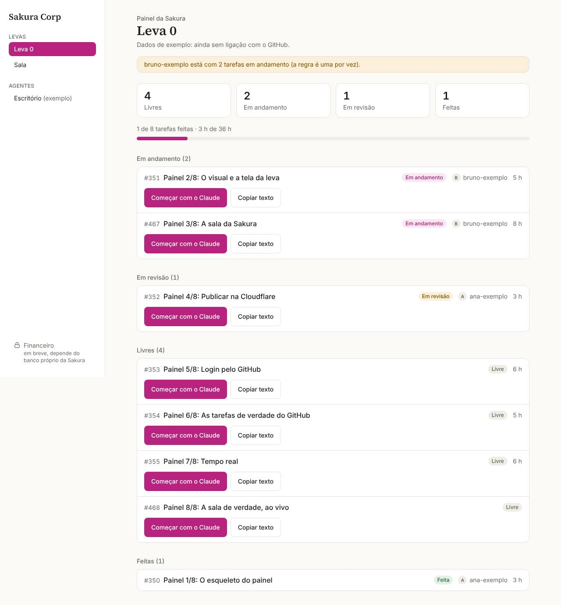</a></figure>
    <figure class="foto"><figcaption>Hoje, no celular</figcaption><a href="hoje/leva-375-escuro.jpg" target="_blank" rel="noopener">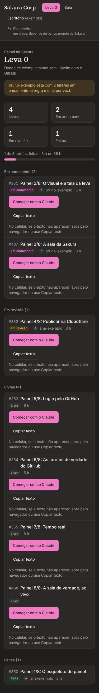</a></figure>
  </div>
</section>

<section class="secao" id="leva-pc"><h2>A leva, no computador</h2><p class="sub">Trabalho / Leva atual, tema claro, 1280 px.</p><div class="grade"><figure class="foto"><figcaption><span class="letra">A</span> Calma</figcaption><a href="versao-a/fotos/leva-1280-claro.jpg" target="_blank" rel="noopener">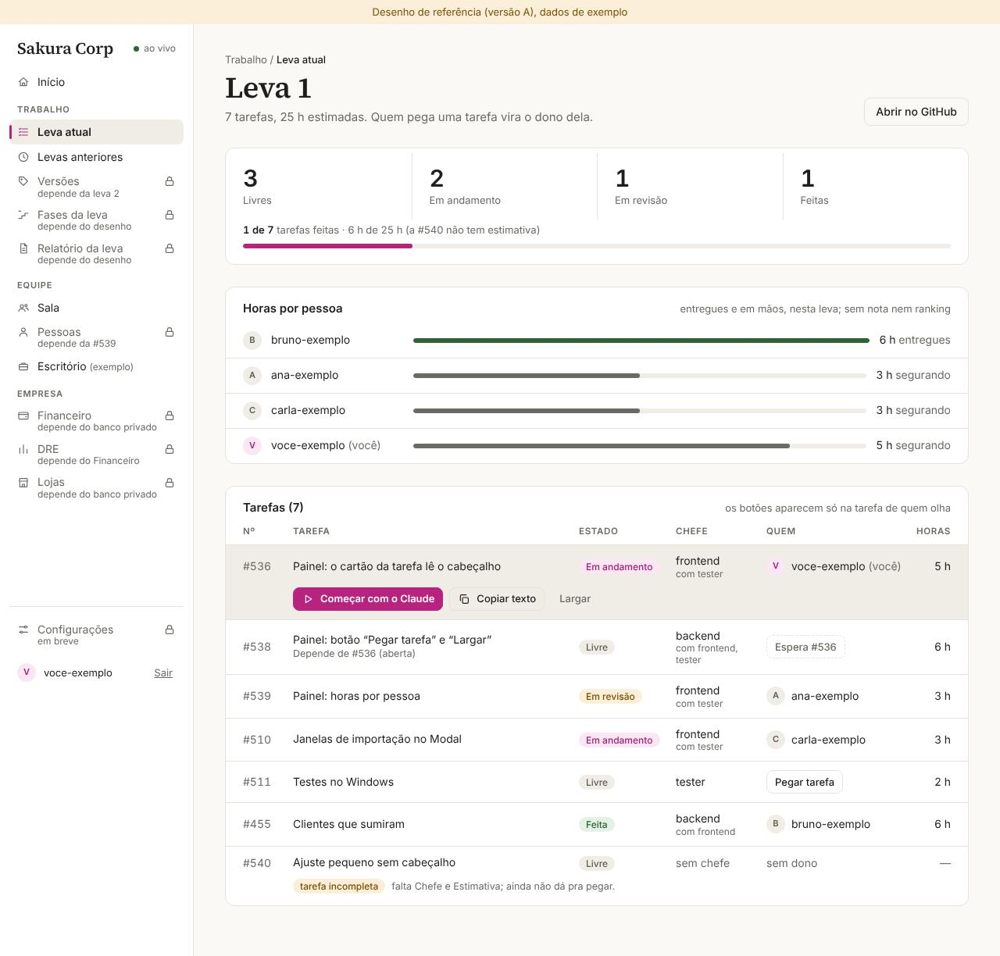</a></figure><figure class="foto"><figcaption><span class="letra">B</span> Quadro</figcaption><a href="versao-b/fotos/leva-1280-claro.jpg" target="_blank" rel="noopener">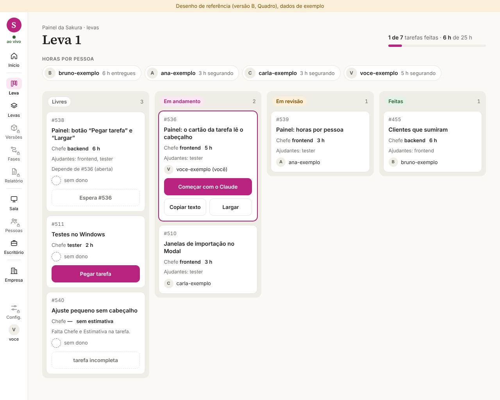</a></figure><figure class="foto"><figcaption><span class="letra">C</span> Central</figcaption><a href="versao-c/fotos/leva-1280-claro.jpg" target="_blank" rel="noopener">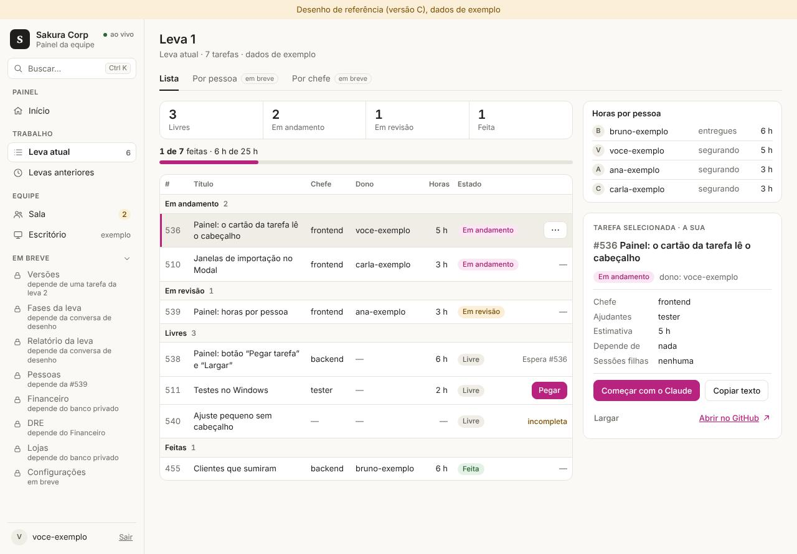</a></figure></div></section><section class="secao" id="leva-cel"><h2>A leva, no celular</h2><p class="sub">A primeira tela, do jeito que aparece no celular (375 px, tema claro).</p><div class="grade"><figure class="foto"><figcaption><span class="letra">A</span> Calma</figcaption><a href="versao-a/fotos/leva-375-claro-tela.jpg" target="_blank" rel="noopener">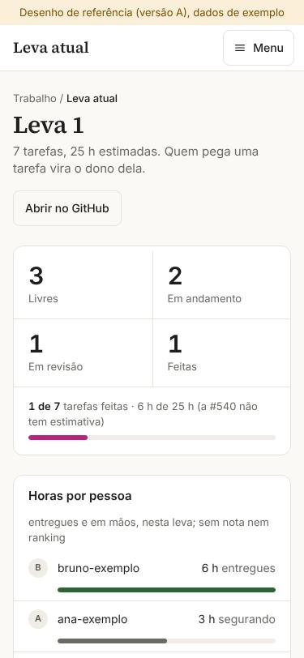</a></figure><figure class="foto"><figcaption><span class="letra">B</span> Quadro</figcaption><a href="versao-b/fotos/leva-375-claro-tela.jpg" target="_blank" rel="noopener">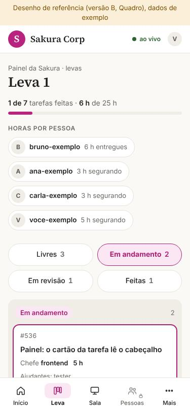</a></figure><figure class="foto"><figcaption><span class="letra">C</span> Central</figcaption><a href="versao-c/fotos/leva-375-claro-tela.jpg" target="_blank" rel="noopener">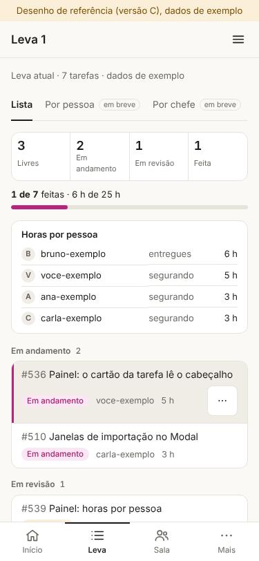</a></figure></div></section><section class="secao" id="inicio"><h2>O Início (página nova)</h2><p class="sub">O que precisa de você, a sua tarefa, a leva e o dia. Tema escuro, 1280 px.</p><div class="grade"><figure class="foto"><figcaption><span class="letra">A</span> Calma</figcaption><a href="versao-a/fotos/inicio-1280-escuro.jpg" target="_blank" rel="noopener">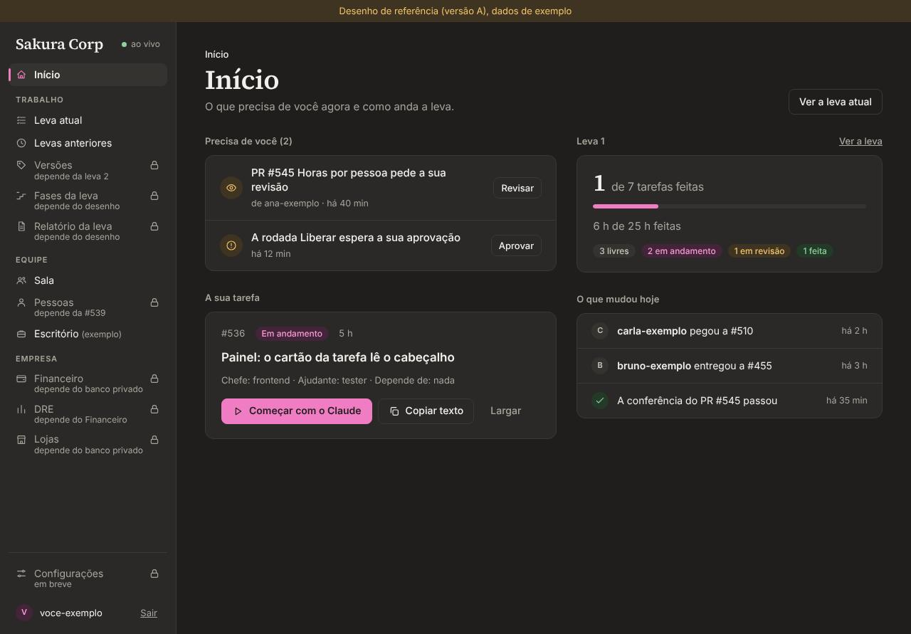</a></figure><figure class="foto"><figcaption><span class="letra">B</span> Quadro</figcaption><a href="versao-b/fotos/inicio-1280-escuro.jpg" target="_blank" rel="noopener">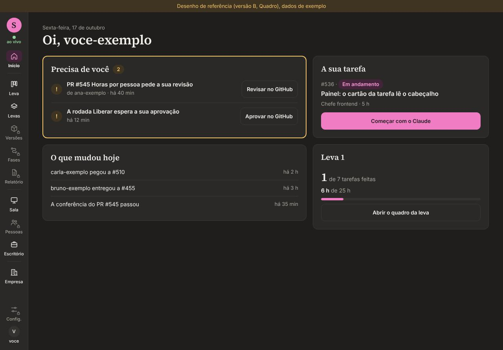</a></figure><figure class="foto"><figcaption><span class="letra">C</span> Central</figcaption><a href="versao-c/fotos/inicio-1280-escuro.jpg" target="_blank" rel="noopener">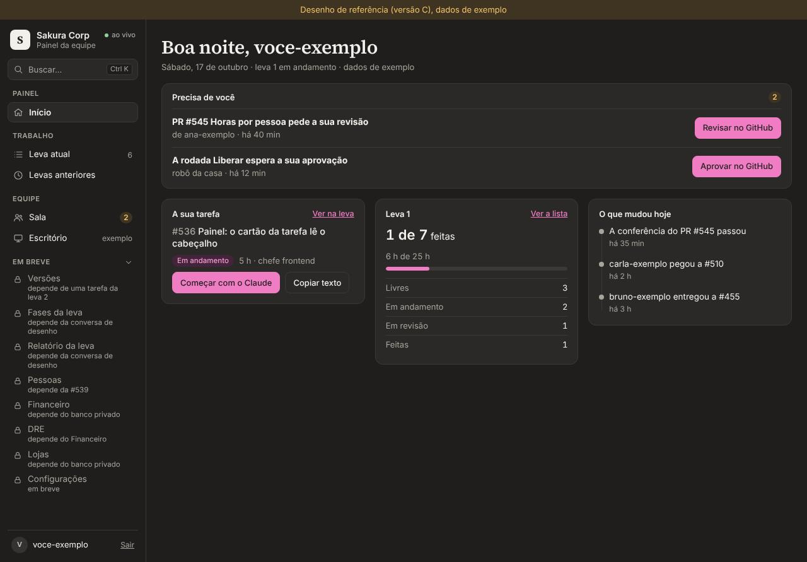</a></figure></div></section><section class="secao" id="inicio-cel"><h2>O Início, no celular</h2><p class="sub">A primeira tela, tema escuro.</p><div class="grade"><figure class="foto"><figcaption><span class="letra">A</span> Calma</figcaption><a href="versao-a/fotos/inicio-375-escuro-tela.jpg" target="_blank" rel="noopener">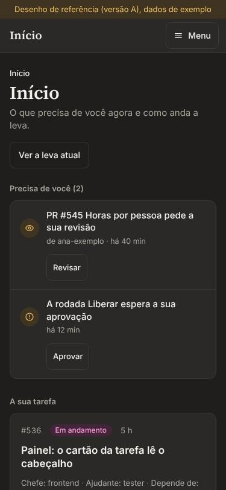</a></figure><figure class="foto"><figcaption><span class="letra">B</span> Quadro</figcaption><a href="versao-b/fotos/inicio-375-escuro-tela.jpg" target="_blank" rel="noopener"></a></figure><figure class="foto"><figcaption><span class="letra">C</span> Central</figcaption><a href="versao-c/fotos/inicio-375-escuro-tela.jpg" target="_blank" rel="noopener">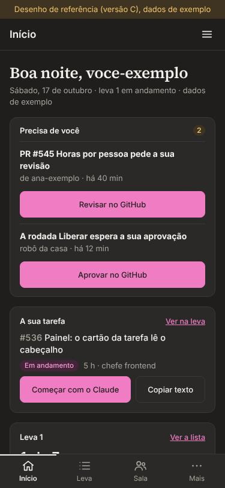</a></figure></div></section><section class="secao" id="em-breve"><h2>Uma aba "em breve": o Financeiro</h2><p class="sub">Diz o que vai ter, do que depende e que dinheiro nunca mora no GitHub. Sem número nenhum.</p><div class="grade"><figure class="foto"><figcaption><span class="letra">A</span> Calma</figcaption><a href="versao-a/fotos/em-breve-1280-claro.jpg" target="_blank" rel="noopener">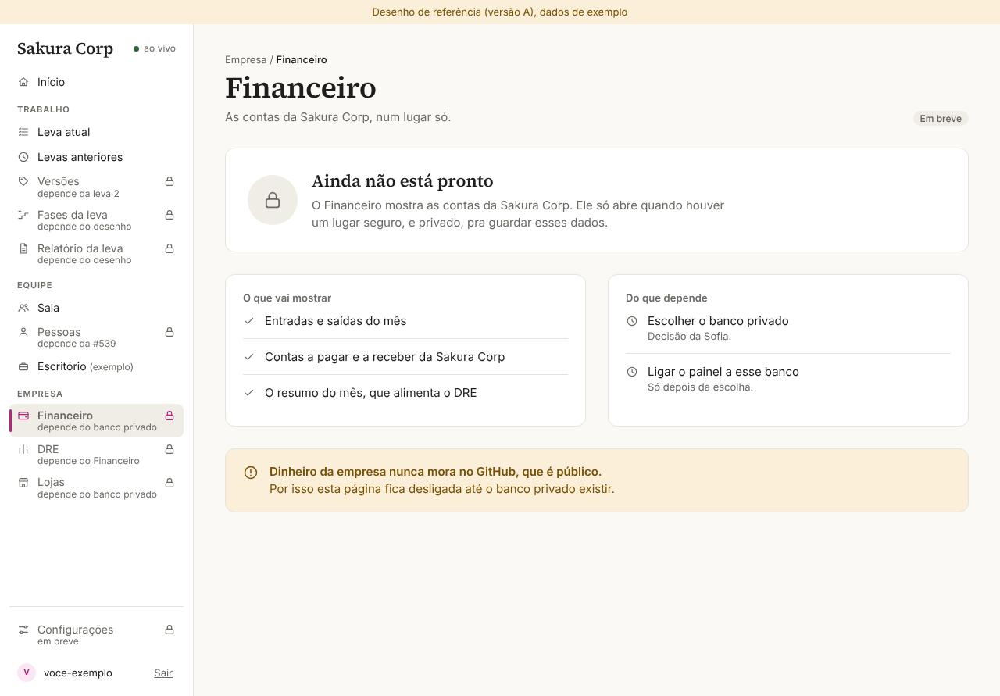</a></figure><figure class="foto"><figcaption><span class="letra">B</span> Quadro</figcaption><a href="versao-b/fotos/em-breve-1280-claro.jpg" target="_blank" rel="noopener">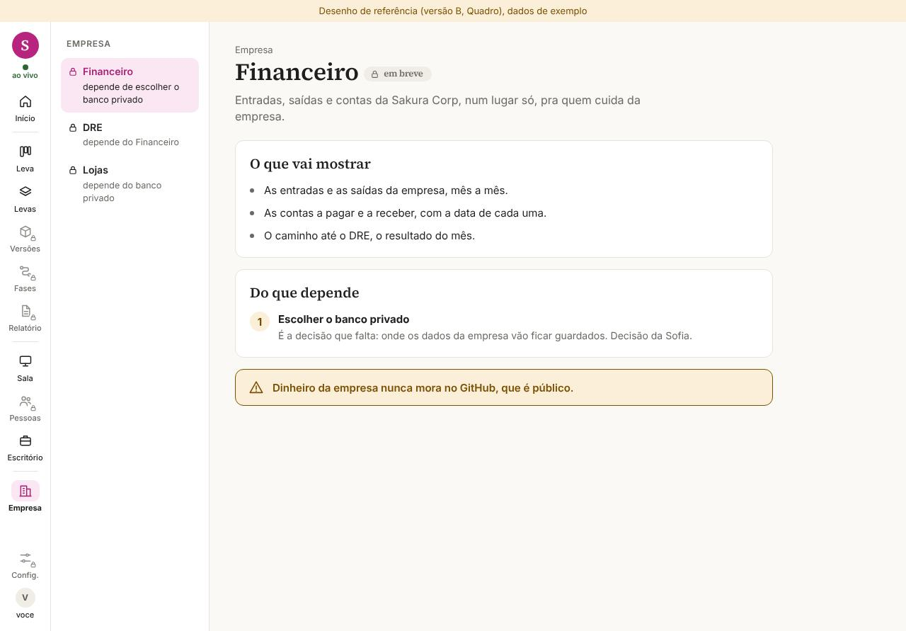</a></figure><figure class="foto"><figcaption><span class="letra">C</span> Central</figcaption><a href="versao-c/fotos/em-breve-1280-claro.jpg" target="_blank" rel="noopener">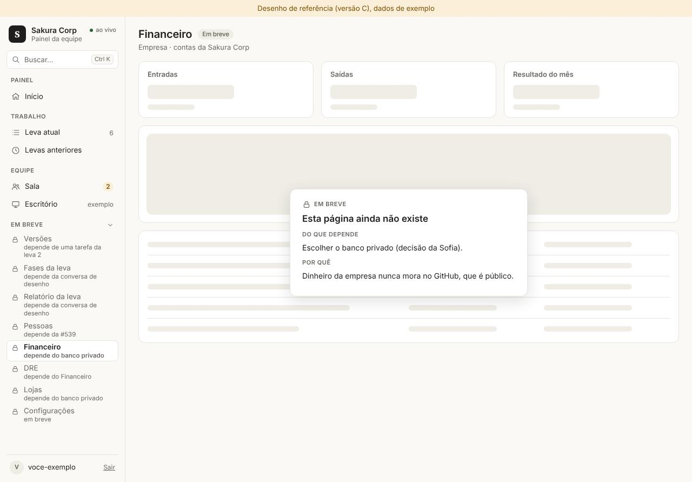</a></figure></div></section><section class="secao" id="sala"><h2>A Sala dentro da moldura nova</h2><p class="sub">A janela escura (visual B) não muda; muda só o que está em volta.</p><div class="grade"><figure class="foto"><figcaption><span class="letra">A</span> Calma</figcaption><a href="versao-a/fotos/sala-1280-claro.jpg" target="_blank" rel="noopener">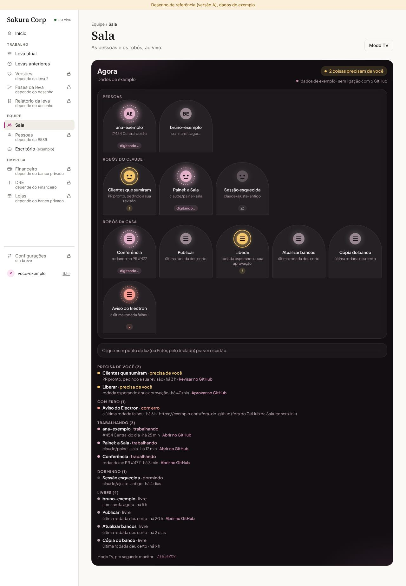</a></figure><figure class="foto"><figcaption><span class="letra">B</span> Quadro</figcaption><a href="versao-b/fotos/sala-1280-claro.jpg" target="_blank" rel="noopener">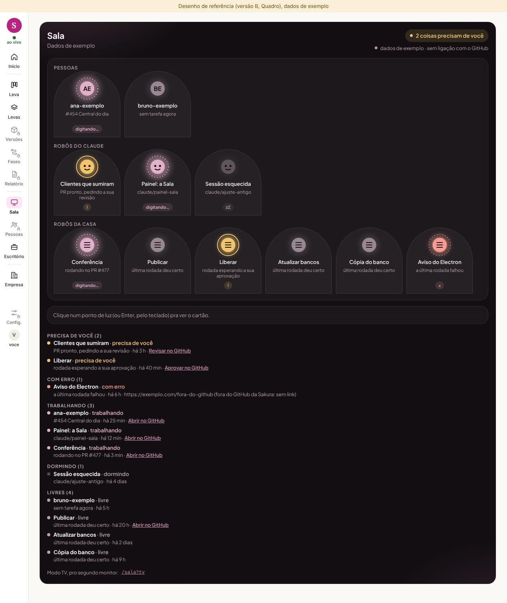</a></figure><figure class="foto"><figcaption><span class="letra">C</span> Central</figcaption><a href="versao-c/fotos/sala-1280-claro.jpg" target="_blank" rel="noopener">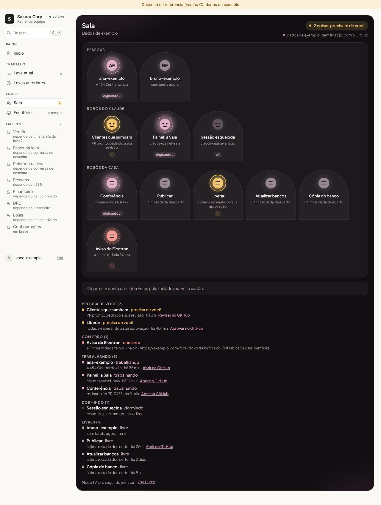</a></figure></div></section>

<footer>Todas as fotos passaram na conferência de contraste (WCAG AA) e sem rolagem lateral. Os detalhes, as fotos que faltam aqui (claro e escuro de tudo) e as tarefas estão no PR, em <code>docs/rascunhos/painel-v2.md</code>.</footer>
</main>
<script>
document.getElementById("copiar").addEventListener("click", async () => {
  const texto = document.getElementById("resposta").textContent;
  const aviso = document.getElementById("copiado");
  try { await navigator.clipboard.writeText(texto); aviso.textContent = "Copiado."; }
  catch { const r = document.createRange(); r.selectNodeContents(document.getElementById("resposta")); const s = getSelection(); s.removeAllRanges(); s.addRange(r); aviso.textContent = "Não deu pra copiar sozinho: o texto está selecionado, é só copiar."; }
});
</script>
